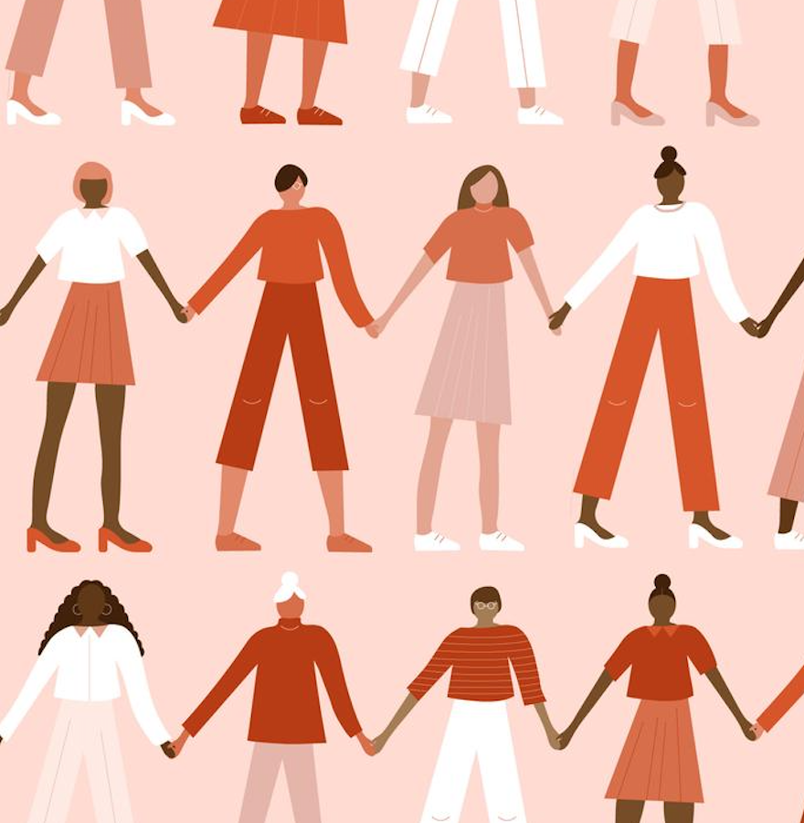
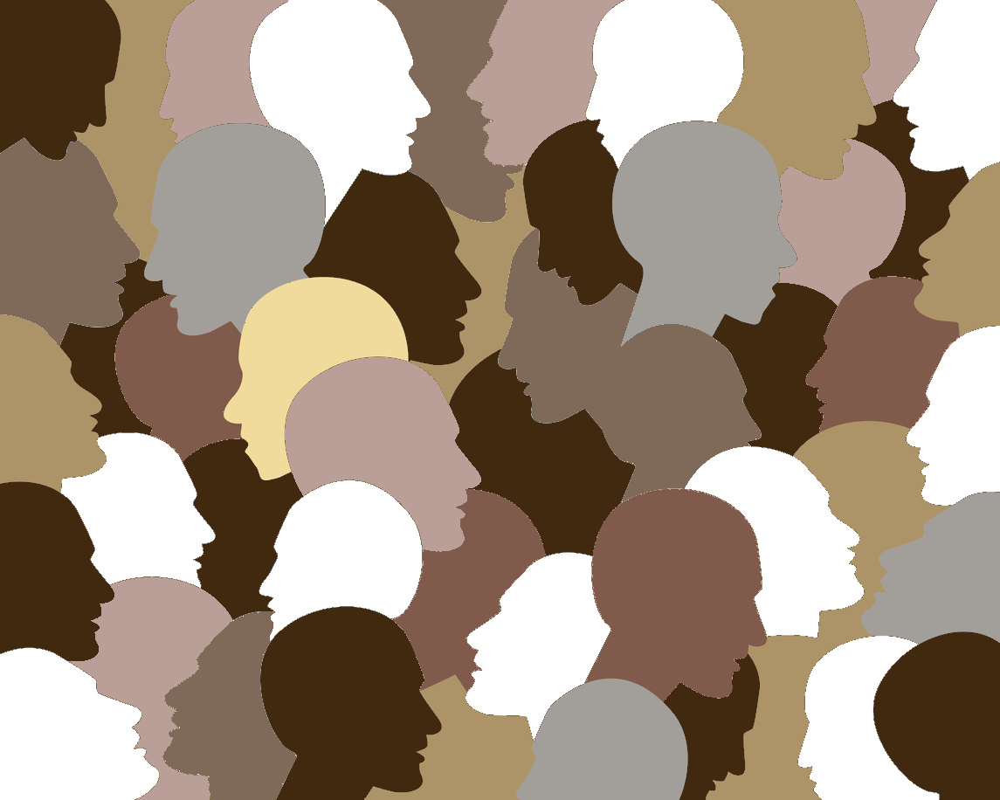
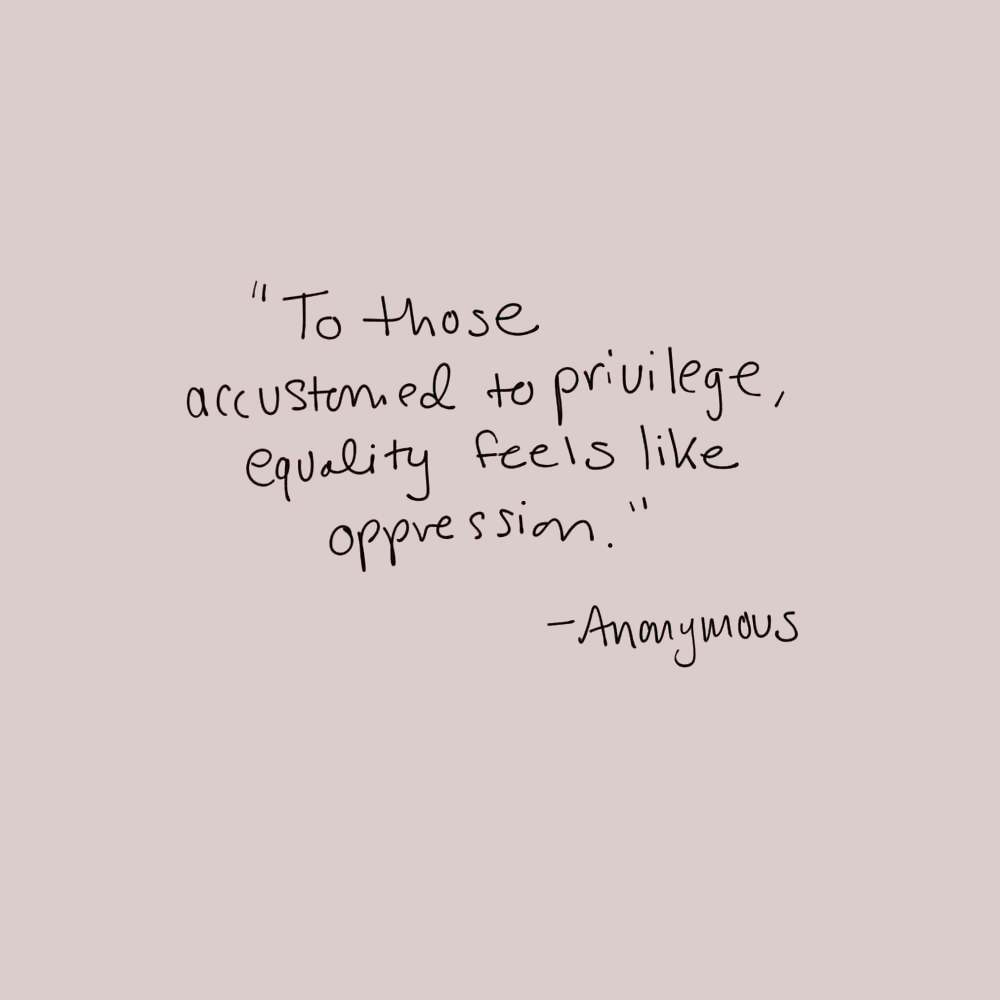

Racism is a systematic approach of depriving a specific group of people from opportunities, discrimination by laws or social norms or just simply creating an environment of animosity because of their racial identities.
Colorism is prejudicial or preferential treatment of same-race people based solely on their skin color. It is the notion of enjoying privilege for inheriting lighter skin tone. Colorism finds its roots in racism because,
without racism, someone's value and perceived superiority wouldn't be based on the color of their skin.

Colorism has been prevalent within communities of color for generations. Lighter skin has been equated to a greater standard as something to strive and attain for,
while darker skin is degraded and shamed, made out to be some kind of curse for those who are forced to live with it.

Raylea Hagan notes that in communities where colorism is prevalent, the mentality is that lighter skin comes with social capital. It is most commonly believed that women with lighter complexions
are more attractive and desirable which increases the chances of finding a spouse; however, many women have taken on skin bleaching for social benefits beyond the promise of marriage.
For some young and impressional people of color, skin bleaching is practiced among some of their family members. Although some people may never be subjected to this practice, there are relatives who are significantly
darker than them who are encouraged to bleach their skin. Those who have lighter skin are praised for their fair complexion and constantly complimented by other family members. They are made to believe that their
skin tone is something to be preserved and that they should be grateful for being born that way. It can be odd and uncomfortable to see one's own relatives being treated so differently from other relatives and friends,
whose dark skin was used against them from day one.

Those who have lighter skin are much more likely to be afforded privileges that people of darker complexions do not have access to. They can use this privilege to advocate for the better treatment of people with darker skin.
An understanding of colorism will allow one to have more informed and effective conversations about race and skin color.